Role:
Design Intern
Timeline:
Summer 2019 (12 weeks)
Responsibilities:
User research, competitive analysis, iterative design, prototyping, motion design & microinteractions
Tools:
Sketch, Invision, Principle, Illustrator, whiteboard, marker, sticky notes, sticky notes, sticky notes
While I am unable to publicly present my final designs for Atlassian at this time, I have documented as much of my process as possible below. Please reach out via my Contact page if you’d like to hear more about my work on the Confluence app.
Confluence is a content collaboration tool used to help teams
collaborate and share knowledge efficiently. You can read more
about the product’s specific capabilities and features
here.
I was asked to focus on Confluence's mobile experience, a part of
the product which had not yet received much design attention.
I was given a lot of freedom to define my project's problem space
more specifically. My process is delineated below.
My process began with a comprehensive evaluation of the app’s functionality
across platforms and devices. I then dug into research/metrics in
order to develop personas, map their most common journeys, identify
pain points, and ideate solutions. I worked with mobile developers
to weigh anticipated impacts of each solution against the cost to
implement it, and prioritized my list of problems/solutions.
Upon identifying the problem I would be designing for, I conducted
a competitive analysis of how other products handle similar user needs.
I began ideating, sketching, mocking up, prototyping, and iterating.
Along the way, I worked to prioritize accessibility best practices,
I restructured information, collaborated with copywriters, altered
visuals, designed new icons when necessary, and checked in regularly
with the Atlassian Design Guidelines Team to be sure my work was ADG
compliant.
I first needed to familiarize myself with the
product -- learn its capabilities and use cases, understand its
structure, etc. So, I began my process with a comprehensive
audit of the current mobile app: documenting all screens,
functionality, bugs, and taking particular note of where
microinteractions and animations could be added in order to
inject user delight at a low cost. I repeated the audit across
platforms and devices, then compiled my findings and shared
them with the Confluence team.
I also sat down with user researchers and dug into metrics and
qualitative findings on the ways in which users interact with
the mobile app vs. the desktop product.
With a list of users’ top tasks and motivations on Confluence mobile, I developed three personas (theoretical users meant to represent the needs, actions, and reactions of a larger group of users):
Alana is great at motivating a team along when times get tough. She constantly drives for outcomes and feels that details get in the way when she’s busy, (which, if you’ve had a meeting with her, you’d realize is almost always). She abhors admin work or things that get in her way. In her workplace, she prefers direct communication from her colleagues and managers.
To get her team to work more efficiently, with less administration waste.
Recognition – wants superiors to see her as doing a great job.
Completion – wants to see all issues resolved and
all boxes ticked. Incompleteness makes her anxious.
Efficiency – wants to make sure she and her team
aren't spending too much time and energy on the
wrong things.
Ringleaders motivate others, turn ideas into
action, attract the right attention and the
right people to a team to get the job done.
They organize the spaces that people need to do
their work, including projects, tickets and so on.
Jose is diligent, collaborative,
trusting, a good listener and a good friend.
Jose gains great satisfaction from helping his
team and/ or customers. He doesn’t mind putting
in the hours, and he tends to put people in touch
with each other if he thinks they’ll both benefit.
He tries to make everyone happy, even if he doesn’t
get what he wants, and he’s comfortable with
following an endorsed process.
Jose can be a bit hesitant, and if he thinks
something can be done better, he’d rather check
with everyone first before diving in himself to
change it. Not many people know this, but he plays
guitar in a cover band, and loves Moroccan food.
To make sure everyone’s getting along, and getting what they need.
Appreciation – his own self-esteem is propped up
by others appreciating him.
Understanding and acceptance – he's strongly
motivated to empathize with and understand others,
and appreciates it when people want to understand
him.
Connectors tend to see relationships and patterns before others do. They’re broad consumers of information and stay up to date on what everyone is doing. The Connector enjoys helping like-minded people and projects get in touch.
Mia is definitely a proponent
of ‘just enough’ when it comes to work. It’s not
that she does a bad job (she’s good at what she
does), she just doesn’t see the need to go the
extra mile. She’d much rather put her energies
into her life outside of work.
Mia uses existing pages, templates and frameworks,
and relies on existing ways of doing things. If
she has to take on responsibility, she’d much
prefer it to be more operational than strategic.
She has no intention of being a power user, or
even pretending to look like one.
To not screw up. To tick the boxes of what she’s required to do, so that she can focus attention elsewhere.
Recognition – wants superiors to see her as doing a great job.
Completion – wants to see all issues resolved and
all boxes ticked. Incompleteness makes her anxious.
Efficiency – wants to make sure she and her team
aren't spending too much time and energy on the
wrong things.
Passengers follow the herd. They aren’t necessarily lazy, they just aren’t motivated to break new ground or spend time exploring when they can get stuff accomplished and clock out at 5. Passengers abhor change and disruption.
Based on the personas developed above, and the top task
findings from the research team, I mapped out probable
user journeys. This was far more an exercise in user
empathy than in analytics.
I used blue stickies to represent each step of the
current journey, pink stickies to record sentiments
along the way and to identify pain points, and yellow
stickies for potential solutions and alterations to the
interface. Underneath the sticky note mappings, I roughly
charted the personas sentiments over the course of the
journey.
This exercise really helped me to accelerate the process of identifying major user pain points within the mobile experience, and to better understand the needs and motivations of users.
As I entered the solution-ideation phase of my process, I spent some time reviewing the parameters I would have to account for, like design guidelines (Material Design, Human Interface Guidelines, and Atlassian’s own design language -- ADG) and accessibility best practices (Web Content Accessibility Guidelines). I also began to pay closer attention to the apps I use the most, why I use them, and at which moments I find myself the most ‘delighted’ by them.
I built a table like the one below to use for solution ideation and impact evaluation (columns 1-4). I then handed it off to an Android and an iOS engineer to fill out the last two columns with their predictions of how much effort each proposed solution would require on the development side.
With the table all filled out, I sat down with my team triad (product manager, designer, and head engineer) to discuss which of my target problems/ potential solutions struck the best balance between maximizing impact while minimizing effort and cost.
With a clearly defined problem space and a boatload
of ideas for how to address it, I jumped into
sketching possible new user flows, interfaces,
shortcuts, etc. Based on these early sketches, I
crafted rough mockups and ‘sparred’ them with the
design team to get feedback.
This kicked off the process of designing, soliciting
feedback via testing and critiques, redesigning, and
so on and so forth until I landed on my finalized
concept and design.
I ended up creating a feature that I’m
super excited to see roll out in the coming months.
It capitalizes on mobile capabilities in order to
reduce user anxiety related to on-the-go page creation.
It challenges desktop-first mental models and truly
takes mobile users’ needs into account.
I would be happy to speak further about this project
privately. Please reach out via my ‘Contact’ page above.